# Load the data
load("localdata/ll_deep.rda")
# Rename the taxmat columns to something more informative
colnames(taxmat) <- c(
"Domain",
"Phylum",
"Class",
"Order",
"Family",
"Genus"
)
# Load the libraries
source("./localdata/Zi-LN-master/inference.R")
source("./localdata/Zi-LN-master/utils/utils.R")
library("huge")
library("igraph")
# Get a boolean 1135x3957 matrix of whether the species
# was found in the person or not
nonzeros <- counts > 0
# Get the number of distinct people that possessed each species
num.nonzeros <- apply(nonzeros, 2, sum)
# Get the total amount of people
total.cells <- dim(counts)[1]
# Only keep the species who appear in more than 20% of the people
keep.indices <- (num.nonzeros / total.cells) > 0.2
counts_el <- as.matrix(counts[, keep.indices])
taxmat_el <- taxmat[keep.indices,]
# Get the zs
options(warn = -1) # turn warnings off because otherwise it's gonna scream...
zs <- infer_Z(counts_el)Paper Replication on Sparse Microbial Networks – Measuring the Network
Work
Omics
Useful
Paper Replication
For: ‘A zero inflated log-normal model for inference of sparse microbial association networks’
This post follows on from the previous one. In the last post, we recreated a graph (a network of microbial associations) in the paper with moderate success. In the paper (Vincent Prost (2021)), they then add a numerical measure to this network to understand the extent to which it is feasible network. Specifically, they measure the assortativity of the graph. Assortativity is a measure of how much vertices of the same group tend to be connected to eachother - in this case, the paper groups vertices by taxonomy1.
They computed assortativity at three different taxonomic levels, with the values being given in Table S1:
| Taxonomic Level | Assortativity |
|---|---|
| Phylum | 0.15 |
| Class | 0.12 |
| Order | 0.10 |
Making the graph
This is a repeat of the code from the last post.
# Get the precisions
precision.matrix <- huge(zs, lambda = 0.251)
associations <- precision.matrix$path[[1]]
adjacency.graph <- graph.adjacency(associations, mode = "undirected")Conducting Meinshausen & Buhlmann graph estimation (mb)....done# Make a function to color the graph
color.graph <- function(taxmat_el, taxa.level) {
# Add a "color" column to prepare for coloring graph nodes
taxmat.colors <- cbind(taxmat_el, "#000000")
colnames(taxmat.colors)[length(colnames(taxmat.colors))] <- "color"
unique.taxa <- unique(taxmat.colors[,taxa.level])
num.taxa <- length(unique.taxa)
increment <- 89 / (num.taxa-1)
increments <- 10 + round(increment * 0:(num.taxa-1))
hex.map <- paste("#19", increments, "60", sep="")
for (i in 1:num.taxa) {
taxmat.colors[
unique.taxa[i]==taxmat.colors[,taxa.level],
"color"
] <- hex.map[i]
}
return(list(
taxmat.colors,
unique.taxa,
hex.map
))
}# Just to check that plotting still works
plot.graph <- function(adjacency.graph, taxmat_el, taxa.level) {
color.graph.data <- color.graph(taxmat_el, taxa.level)
taxmat.colors <- color.graph.data[[1]]
unique.taxa <- color.graph.data[[2]]
hex.map <- color.graph.data[[3]]
plot(
adjacency.graph,
edge.color = "green",
vertex.size = 5,
vertex.label = "",
vertex.color = taxmat.colors[,"color"],
margin=c(0, 0, 0, 0)
)
plot(
adjacency.graph,
vertex.label.color = "#00000000",
vertex.color = "#00000000",
edge.color = "#00000000",
vertex.frame.color = "#00000000"
)
legend('top',
legend = unique.taxa,
bg = "#757575",
fill = hex.map,
ncol = 2
)
}plot.graph(adjacency.graph, taxmat_el, "Order")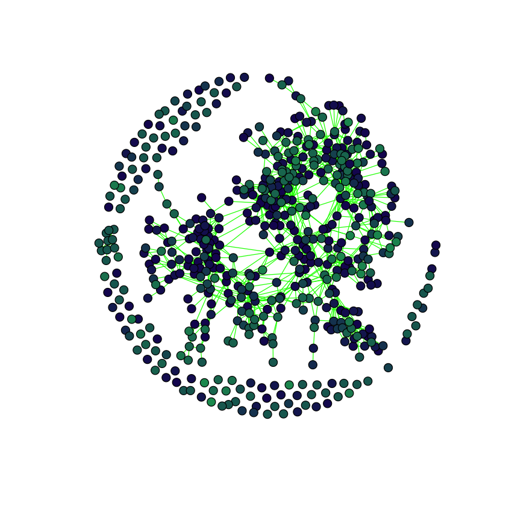

The network is stored as an igraph object adjacency.graph, calculated in the code hidden by the dropdown.
adjacency.graphIGRAPH 36c88f2 U--- 565 1200 --
+ edges from 36c88f2:
[1] 1-- 2 1-- 76 2-- 77 2--195 3--324 4--528 5--221 5--479 5--480
[10] 5--526 5--534 5--542 5--553 5--563 7--244 7--261 7--299 7--479
[19] 7--485 7--526 8-- 9 8-- 66 8-- 69 8-- 85 8--153 8--234 8--246
[28] 9-- 66 9-- 67 9-- 68 9-- 69 9--128 9--130 9--211 10-- 67 10--128
[37] 11-- 82 11--120 11--243 11--290 11--336 11--363 11--435 11--437 11--456
[46] 11--457 12--542 13-- 53 13-- 76 13--192 13--272 13--326 14--106 14--244
[55] 14--254 14--342 14--554 15-- 34 15-- 46 15--243 15--337 16-- 17 16--316
[64] 16--451 16--458 16--510 16--519 17-- 64 17--316 17--343 17--510 17--525
[73] 19-- 20 19-- 21 19-- 25 19-- 30 19-- 32 19-- 34 19-- 35 19-- 54 19-- 81
+ ... omitted several edgesEvaluating the assortativity of a graph is straightforward with the igraph package:
get.assortativity.at.level <- function(adjacency.graph, taxmat, taxa.level) {
groups <- as.integer(as.factor(taxmat[, taxa.level]))
return(assortativity(adjacency.graph, groups))
}
get.assortativity.at.levels <- function(adjacency.graph, taxmat) {
curried.assortativity <- function(taxa.level) get.assortativity.at.level(
adjacency.graph,
taxmat,
taxa.level
)
return(
lapply(
colnames(taxmat),
curried.assortativity
)[2:length(colnames(taxmat))]
)
}
print.assortativity.performances <- function(adjacency.graph, taxmat) {
for (taxa.level in colnames(taxmat)) {
if (taxa.level == "Domain") {
# Skip b/c everything in dataset has domain being bacteria
# which will cause this to evaluate as NaN.
next()
}
print(
paste(
taxa.level,
": ",
get.assortativity.at.level(adjacency.graph, taxmat_el, taxa.level)
)
)
}
}print.assortativity.performances(adjacency.graph, taxmat_el)[1] "Phylum : 0.119028213625117"
[1] "Class : 0.114678278712612"
[1] "Order : 0.00101704475751504"
[1] "Family : 0.0227129118376968"
[1] "Genus : 0.0295176588068461"It seems that the assortativity for order is much lower than the rest, although the lower-taxa levels are all much lower than the high-taxa levels. This would be expected as it is easier to accurately group things in a few larger groups than many smaller groups.
Unfortunately for us, this is very far away from the expected results. We know from the last post that we had a lot more isolated vertices than in the paper, so maybe we should look at assortativity as a function of the regularization parameter.
lambdas <- 10^seq(0, -2, by=-0.1)
precision.matrix.path <- huge(zs, lambda = lambdas)$pathConducting Meinshausen & Buhlmann graph estimation (mb)....donelibrary("ggplot2")
library("scales")sparsities <- sapply(precision.matrix.path, sum) / 2
ggplot(data.frame(sparsities), aes(lambdas, sparsities)) +
geom_line() +
scale_x_continuous(
trans = "log10",
breaks = round(
lambdas[seq(1, length(lambdas), 4)],
digits = 3
)
) +
ggtitle("Number of edges in graph as sparsity increases") +
labs(x = "Regularization parameter lambda", y = "Number of edges")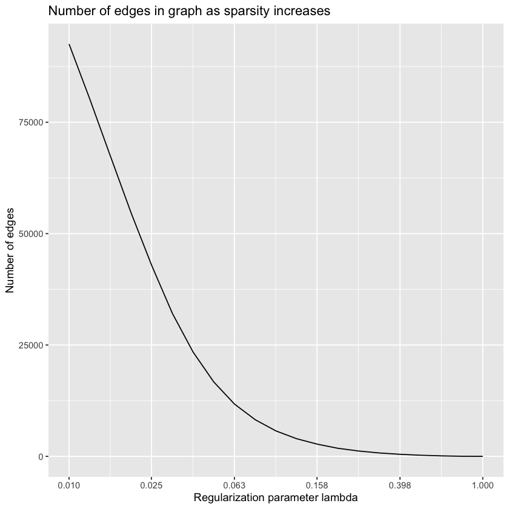
plot.all.assortativities <- function(path, taxmat, lambdas) {
graphs <- lapply(
lapply(path, graph.adjacency),
as.undirected
)
assortativities <- lapply(
graphs,
function(graph) get.assortativity.at.levels(graph, taxmat)
)
# Remove first element as full of NaNs
assortativities <- assortativities[2:length(assortativities)]
lambdas.short <- lambdas[2:length(lambdas)]
assortativities.1 <- as.numeric(lapply(assortativities, function(l) l[[1]]))
assortativities.2 <- as.numeric(lapply(assortativities, function(l) l[[2]]))
assortativities.3 <- as.numeric(lapply(assortativities, function(l) l[[3]]))
assortativities.4 <- as.numeric(lapply(assortativities, function(l) l[[4]]))
assortativities.5 <- as.numeric(lapply(assortativities, function(l) l[[5]]))
ggplot(
data.frame(assortativities.1),
aes(x=lambdas.short)
) +
geom_line(aes(y = assortativities.1, color = "Phylum")) +
geom_line(aes(y = assortativities.2, color = "Class")) +
geom_line(aes(y = assortativities.3, color = "Order")) +
geom_line(aes(y = assortativities.4, color = "Family")) +
geom_line(aes(y = assortativities.5, color = "Genus")) +
scale_colour_manual("",
breaks = c("Phylum", "Class", "Order", "Family", "Genus"),
values = c("black", "blue", "maroon", "red", "orange")
) +
theme(legend.position = "top") +
labs(x = "Regularization parameter lambda", y = "Assortativities") +
ggtitle("Assortativities at different taxonomic levels")
}plot.all.assortativities(precision.matrix.path, taxmat_el, lambdas)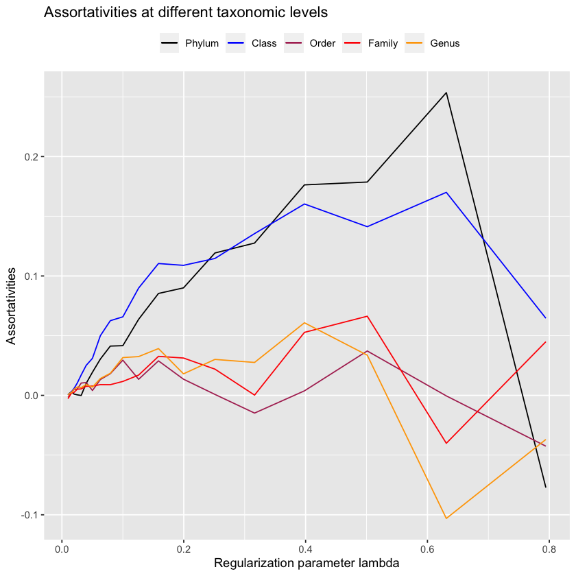
Interestingly, at no point do we reproduce the assortativities seen in the paper. This is easily seen because order never reaches \(0.10\), the value that is reported by Vincent Prost (2021). Now, this may be because we’re calculating the precision matrix using the Meinshausen and Buhlmann graph estimation method, the default in igraph. Perhaps we would have better luck using the Graphical LASSO method? We know that Vincent Prost (2021) use Meinshausen and Buhlmann for their Figure 5 data, but they do not report their method for Figure 4 - the figure we’re interested in - so it is reasonable to assume that they may have used Graphical LASSO here (a method also used elsewhere in their paper).
lambdas.glasso <- 10^seq(0, -2, by=-0.1)
glasso.path <- huge(zs, lambda = lambdas.glasso, method="glasso")$pathConducting the graphical lasso (glasso) wtih lossless screening....in progress: 95%
Conducting the graphical lasso (glasso)....done. sparsities <- sapply(glasso.path, sum) / 2
ggplot(data.frame(sparsities), aes(lambdas.glasso, sparsities)) +
geom_line() +
scale_x_continuous(
trans = "log10",
breaks = round(
lambdas.glasso[seq(1, length(lambdas.glasso), 4)],
digits = 3
)
) +
ggtitle("Number of edges in graph as sparsity increases") +
labs(x = "Regularization parameter lambda", y = "Number of edges")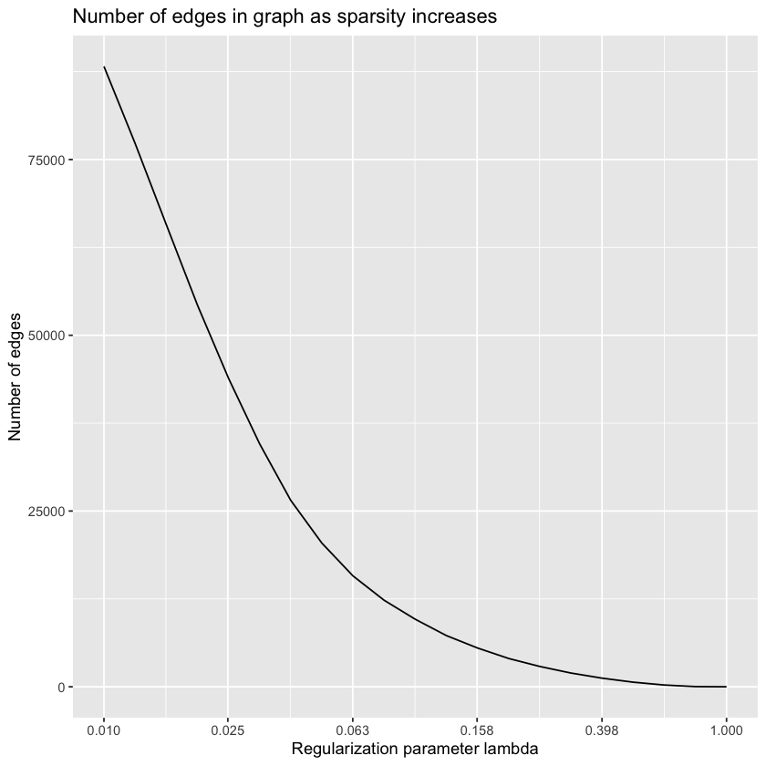
plot.all.assortativities(glasso.path, taxmat_el, lambdas.glasso)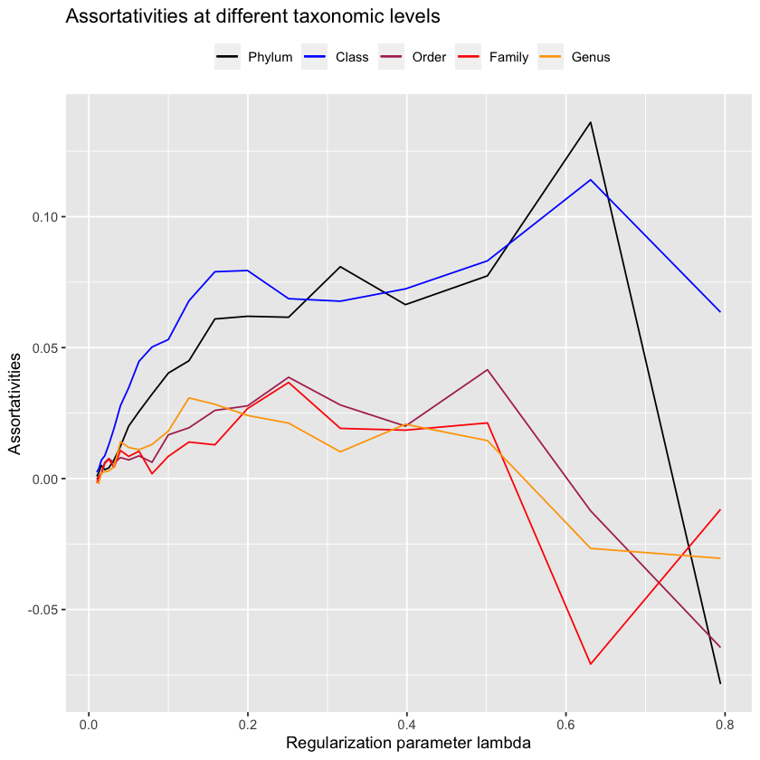
No - glasso performs much notably worse! Maybe we just didn’t have the resolution with mb to find the point where the assortativity for order reached \(0.10\)?
lambdas.mb.2 <- 10^seq(0, -2, by=-0.05)
mb.2 <- huge(zs, lambda = lambdas.mb.2)$pathConducting Meinshausen & Buhlmann graph estimation (mb)....doneplot.all.assortativities(mb.2[2:40], taxmat_el, lambdas.mb.2[2:40])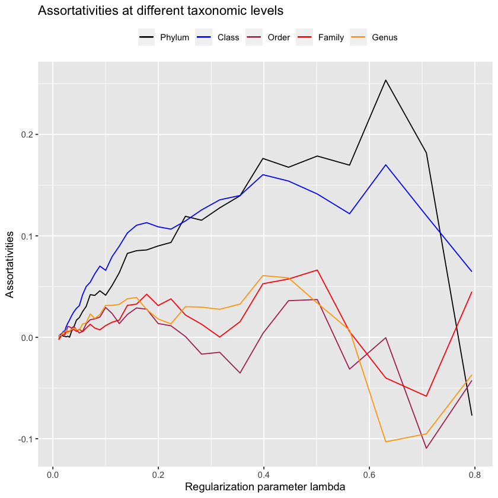
Unfortunately, I can’t really replicate their assortativity results, and their github doesn’t contain code to replicate it either!
Which is quite frustrating. Anyways, I have my own GLasso method, antGLasso, so I want to try it. It’s experimental so it doesn’t have an R interface, making it difficult to use in this R notebook, so I’ll just export the zs, run it on them, and bring it back here.
write.csv(zs, "./localdata/computed_zs.csv")antGLasso.mat <- as.matrix(
read.csv(
"./localdata/antGLasso-output.csv",
header=FALSE,
col.names=paste0("C", 1:565)
)
)antGLasso regularizes by computing the full solution and then thresholding. For the previous methods I capped out at keeping the top ~100000 edges, so we’ll do the same here.
upper.bound <- 20
lower.bound <- 0.01
sum(abs(antGLasso.mat) > upper.bound) / 2
sum(abs(antGLasso.mat) > lower.bound) / 2
14.5
131390
lambdas.antGLasso <- exp(0:19 * (log(upper.bound) - log(lower.bound)) / 19 + log(lower.bound))threshold.matrix <- function(mat., threshold) {
mat <- matrix(0, dim(mat.)[[1]], dim(mat.)[[2]])
mat[abs(mat.) < threshold] = 0
mat[abs(mat.) > threshold] = 1
diag(mat) <- 0
return(mat)
}antGLasso.path <- lapply(
lambdas.antGLasso,
function(thresh) threshold.matrix(antGLasso.mat, thresh)
)plot.all.assortativities(antGLasso.path, taxmat_el, lambdas.antGLasso)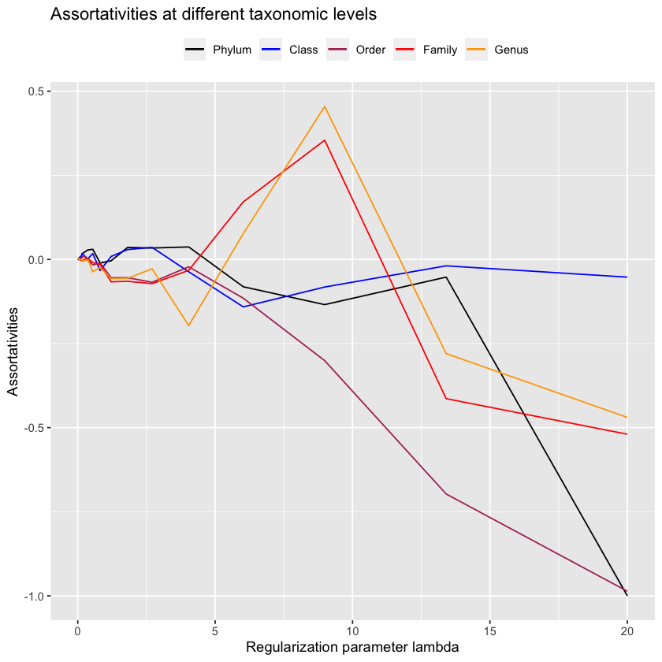
See the plots produced
lambdas.antGLasso- 0.01
- 0.0149189555782061
- 0.0222575235544487
- 0.0332059005189697
- 0.049539735477684
- 0.0739081112947648
- 0.110263182927571
- 0.164501152800804
- 0.24541853911989
- 0.366138828319787
- 0.546240891515934
- 0.814934359552592
- 1.2157969509319
- 1.81384207030714
- 2.70606292727936
- 4.03716326039112
- 6.02302593437409
- 8.98572563613103
- 13.4057641603387
- 20
Best assortativity for low level connections:
plot.graph(
graph.adjacency(
antGLasso.path[[18]],
mode = "Undirected"
),
taxmat_el,
"Order"
)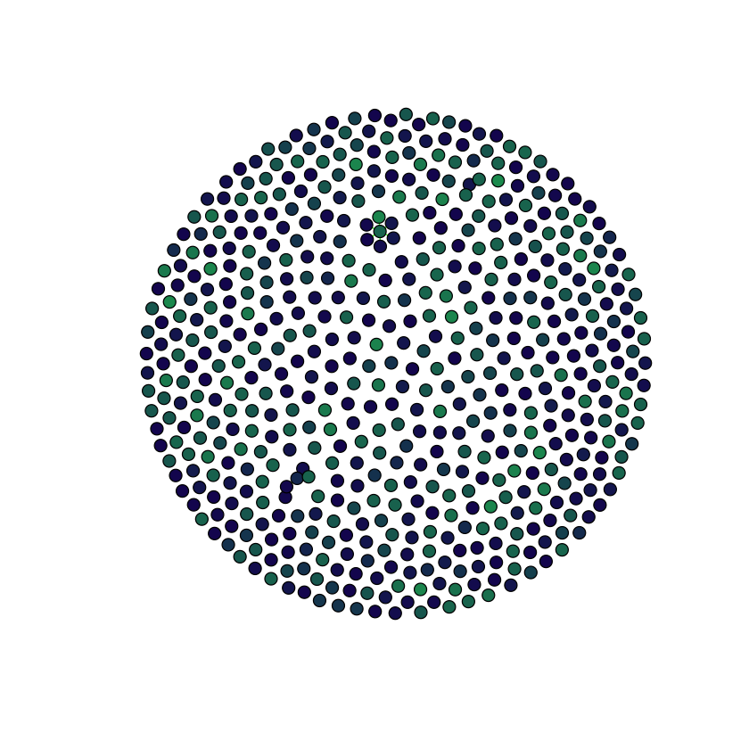

Assortativity for the less sparse (still sparse though) situation
plot.graph(
graph.adjacency(
antGLasso.path[[15]],
mode = "Undirected"
),
taxmat_el,
"Order"
)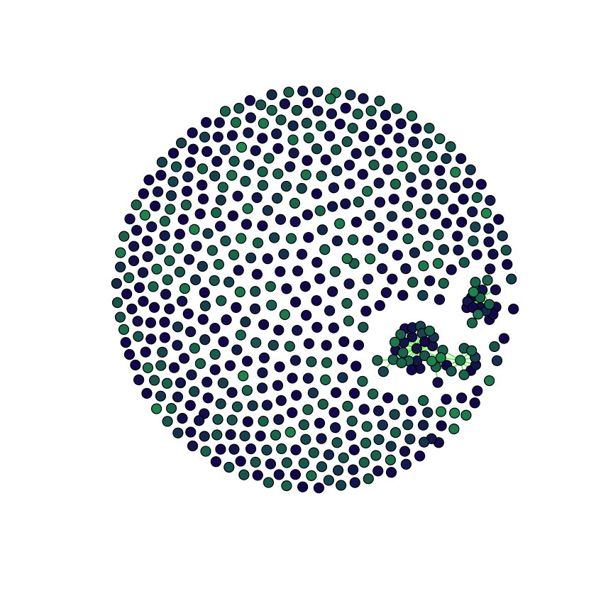
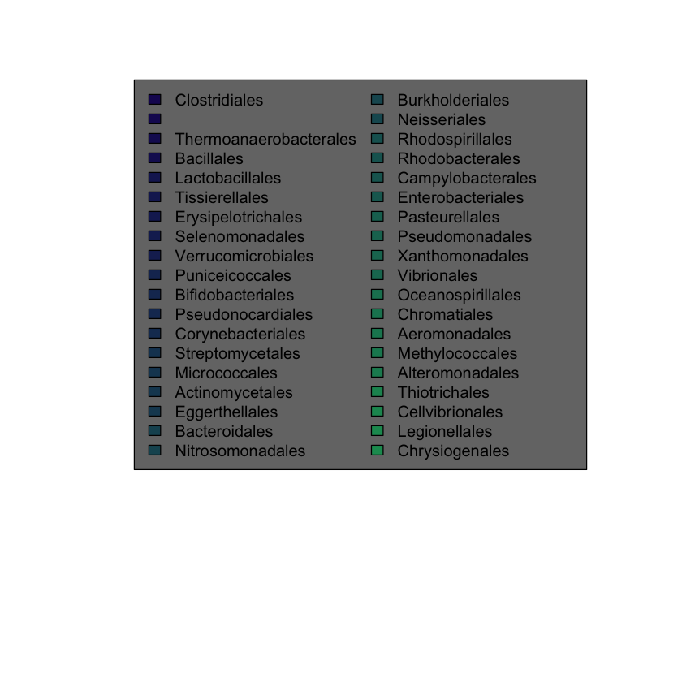
Let’s zoom our assortativity plot into what’s happening before it gets very sparse.
idcs <- lambdas.antGLasso < 5
plot.all.assortativities(antGLasso.path[idcs], taxmat_el, lambdas.antGLasso[idcs])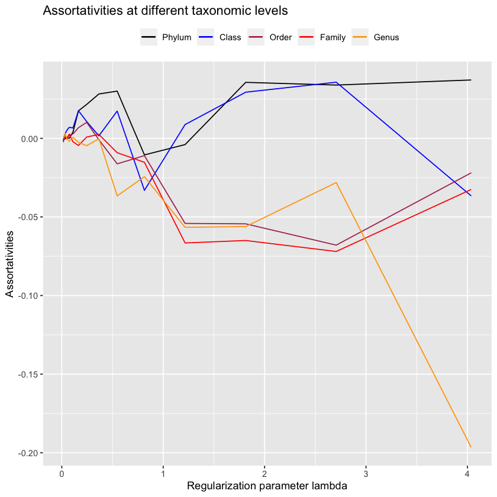
It seems that once it gets very sparse, our method does well on the low-level taxonomies - these will be the edges that antGLasso most confidently believes are correct, so its nice to know that it is indeed correct. However, due to the extreme sparsity in those situations its not very useful. When looking at more reasonably sparsified situations, antGLasso does terrible. Not only does it not have substantial assortativity for the higher taxonomic levels, but the low-level taxonomies have negative assortativity.
Other, failed, attempts with antGLasso
One more thing we can try before being sad is to only look at the negative values in the precision matrix as they carry special meaning.
antGLasso.negs <- matrix(0, 565, 565)
antGLasso.negs[antGLasso.mat < 0] <- abs(antGLasso.mat[antGLasso.mat < 0])
antGLasso.negs[antGLasso.mat > 0] <- 0
diag(antGLasso.negs) <- 0upper.bound.negs <- 1
lower.bound.negs <- 0.0001
sum(antGLasso.negs > upper.bound.negs) / 2
sum(antGLasso.negs > lower.bound.negs) / 2
379
87434
lambdas.antGLasso.negs <- exp(
0:19 * (log(upper.bound.negs) - log(lower.bound.negs)) / 19 + log(lower.bound.negs)
)antGLasso.path.negs <- lapply(
lambdas.antGLasso.negs,
function(thresh) threshold.matrix(antGLasso.negs, thresh)
)plot.all.assortativities(antGLasso.path.negs, taxmat_el, lambdas.antGLasso.negs)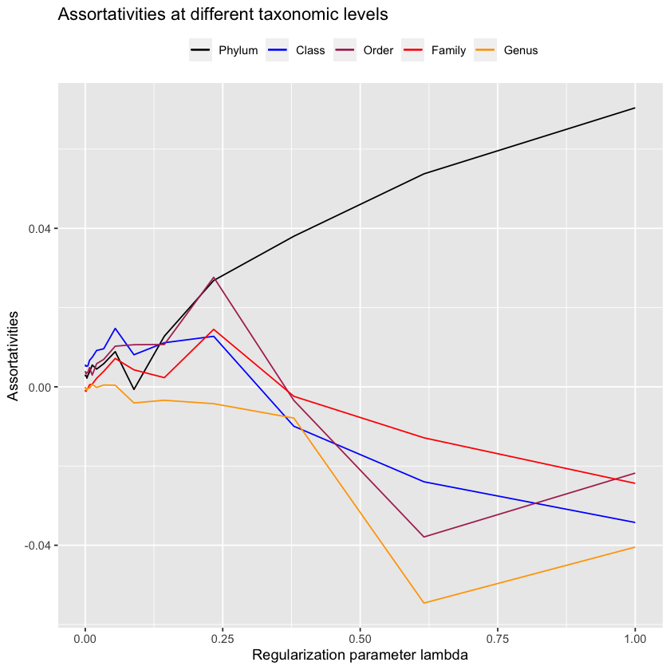
Unfortunately it should be fairly clear that this doesn’t work. Maybe we can look at the inverse, which corresponds to the covariance matrix?
antGLasso.inv <- solve(antGLasso.mat)upper.bound.inv <- 1
lower.bound.inv <- 0.005
sum(abs(antGLasso.inv) > upper.bound.inv) / 2
sum(abs(antGLasso.inv) > lower.bound.inv) / 2
159.5
96350.5
lambdas.antGLasso.inv <- exp(
0:19 * (log(upper.bound.inv) - log(lower.bound.inv)) / 19 + log(lower.bound.inv)
)antGLasso.path.inv <- lapply(
lambdas.antGLasso.inv,
function(thresh) threshold.matrix(antGLasso.inv, thresh)
)plot.all.assortativities(antGLasso.path.inv, taxmat_el, lambdas.antGLasso.inv)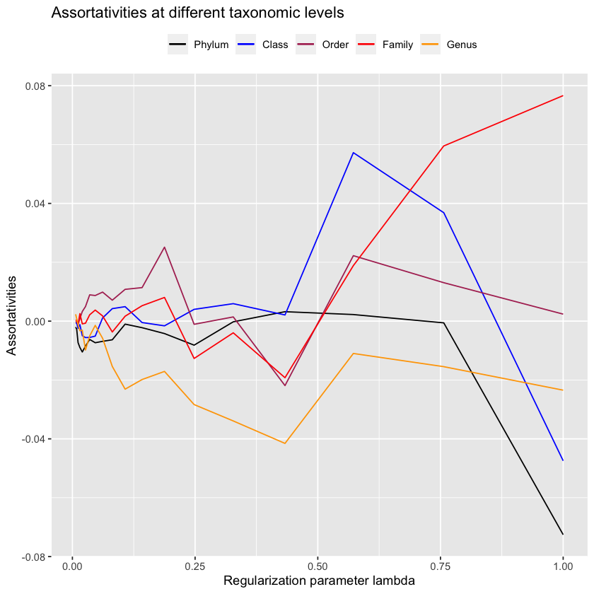
Still we don’t quite achieve the desired values. The evidence is clear; antGLasso is objectively worse at finding high-assortativity graphs.
Once again, a paper replication blog post ends on a bit of a downer, this time twofold:
- We were unable to get quite as good results as Vincent Prost (2021), although we got close enough to know their method worked
- My custom method absolutely failed to get even halfway-decent results.
Such is life.
References
Vincent Prost, Thomas Brüls, Stéphane Gazut. 2021. “A Zero Inflated Log-Normal Model for Inference of Sparse Microbial Association Networks,” June. https://doi.org/https://doi.org/10.1371/journal.pcbi.1009089.
Footnotes
Such as phylum, or order.↩︎